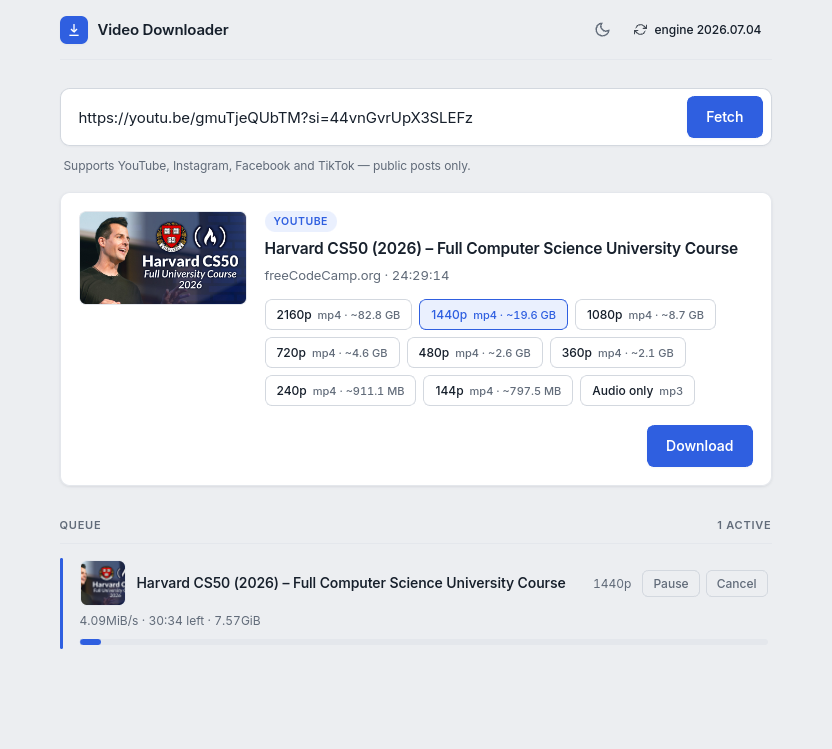
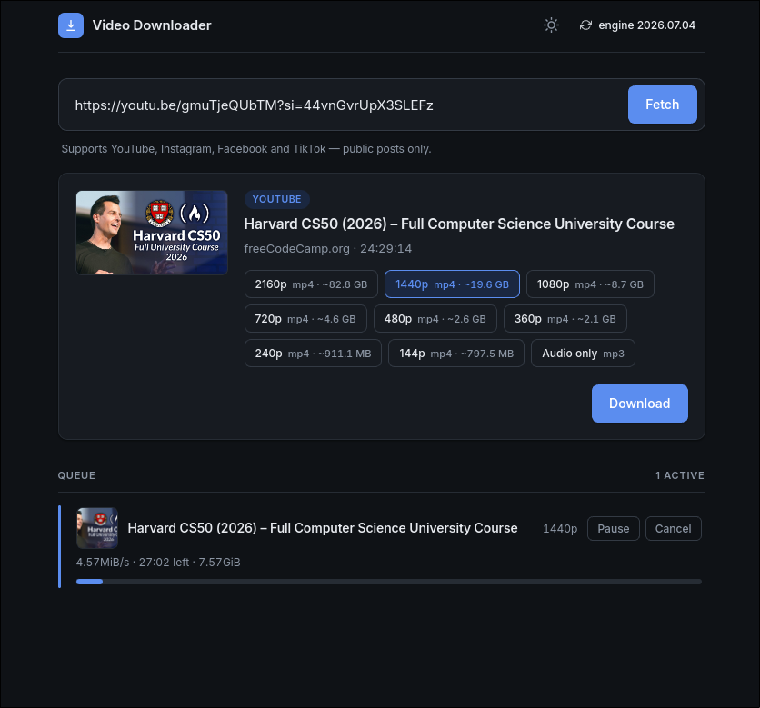

Save any public video, in the quality you actually want.
A small, fast desktop app for YouTube, Instagram, Facebook and TikTok. Paste a link, see every resolution with its exact size, and download the video or just the audio. No login, no clutter.
Available for Linux and Windows · MIT licensed


Everything you need
Built to do one thing, done well
No accounts, no upsells, no browser extensions. Just a clean window that downloads what you point it at.
Every real resolution
See every quality the video actually offers, highest to lowest, each labelled with its mp4 file size. Plus an audio-only option.
Pause, resume, cancel
A real queue where every item can pause and resume. Cancel stops at once and cleans up the partial files it left behind.
Resumes after you close it
Close the app mid-download and the job comes back next launch. Hit Resume and it continues from where it stopped, not from zero.
Light and dark themes
A tidy toggle in the header. Your choice is remembered, and the first run follows your system setting.
No login, nothing tracked
A single-user personal tool for public content. No accounts, no cookie import, no analytics. It runs entirely on your machine.
Native on Linux and Windows
A tiny Tauri app that bundles its own engine. The download tools update in place from a button in the header.
Get it
Download Video Downloader
Grab the latest installer for your system from the GitHub releases page.
Linux
Fedora .rpm · portable AppImage
Install the .rpm on Fedora, or run the AppImage on any glibc Linux. An Arch PKGBUILD is in the repo too.
Windows
.exe installer (NSIS)
Run the setup installer. WebView2 ships with Windows 11; on Windows 10 it installs automatically if missing.
Download for WindowsPrefer to build it yourself? The full source and build steps are on GitHub.
A note on rights
Video Downloader is meant only for content you have the right to save. Most of these platforms restrict downloading in their terms of service. Please respect them, and the rights of the people who made what you are saving.